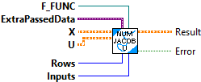
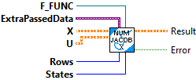

Returns the numerical Jacobian with respect to u for f(x, u).
Inputs:
- rows -- Number of rows in the result of f(x, u).
- inputs -- The inputs to the system.
- f -- Vector-valued function reference from which to compute Jacobian.
- x -- State vector.
- u -- Input vector.
Outputs:
- result -- The numerical Jacobian with respect to U for f(x, u, ...).
- error -- If TRUE, an error occured.

Returns numerical Jacobian with respect to x for f(x, u, ...).
Inputs:
- rows -- Number of rows in the result of f(x, u).
- states -- Number of rows in x.
- f -- Vector-valued function reference from which to compute Jacobian.
- x -- State vector.
- u -- nput vector.
Outputs:
- result -- The numerical Jacobian with respect to x for f(x, u, ...).
- error -- If TRUE, an error occured.